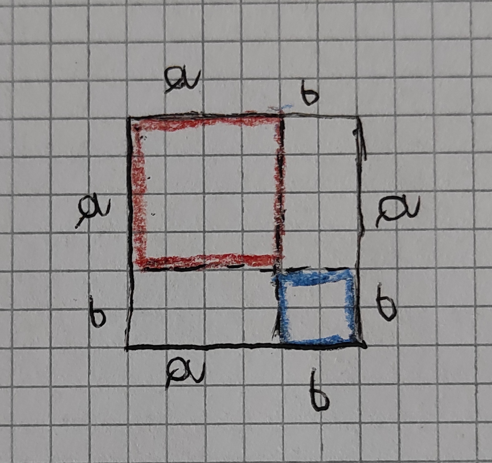

LA CONNESIONE TRA L'ALGEBRA E LA GEOMETRIA
In questa pagina voglio parlare della connesione tra l'algebra e la geometria.
INIZIAMO!
Consideriamo un quadrato che ha per lato a+b cioè 2 segmenti, il segmento A e il segmento B. come si vede nella
foto il quadrato ha la somma di a+b in tutti i punti, quindi il quadrato è formato da: 2 quadrati il primo che ha il lato A e area A² e il secondo che ha
il lato B e l'area B² e da 2 rettangoli che hanno base A e altezza B con area AB.
Il quadrato perciò è formato da un quadrato che ha per area A², da un quadratino di lato B di cui l'area è B²
e da 2 rettangoli uguali che hanno area=aXb (sono 2 quindi 2AB).
Quindi ho potuto constatare che a²+B²+2ab (che è lo sviluppo del binomio (a+b)² come abbiamo fatto in algebra si ottiene anche
geometricamente nella costruzione di un quadrato di lato A+B che è composto da un quadrato che ha area A²,
da un quadratino che ha area B² e da 2 rettangoli che hanno area AB.
Quindi c'è una perfetta correlazione fra la geometria e algebera).

TORNA INDIETRO